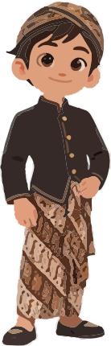
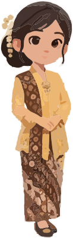

Mata Alam
Temukan hal yang membuat bumi sehat dan nyaman.
Ikuti Raka dan Sari menjelajahi kampung. Lihat alam, rasakan kepedulian, belajar memilah, lalu lakukan kebaikan sungguhan.
Sesi digital singkat • sekitar 5–7 menit • didampingi guru/orang tua


Bukan hanya menjawab soal. Setiap langkah mengajak anak mengamati, memahami, mencoba, lalu bertindak.
Temukan hal yang membuat bumi sehat dan nyaman.
Belajar memahami perasaan makhluk hidup dan memilih sikap baik.
Latihan memilah sampah dengan cara sederhana dan aman.
Lakukan satu kebaikan bersama orang dewasa di sekitar.
“Memayu Hayuning Bawana”
Merawat keindahan dan keselamatan dunia dimulai dari tindakan kecil.